The Draw
Two fighters are drawn at random from the locked roster of 37 fighters, in a universe arena drawn at random. No rematches until the wheel turns full. The winner is drawn too — except when THE ARTIST steps in.
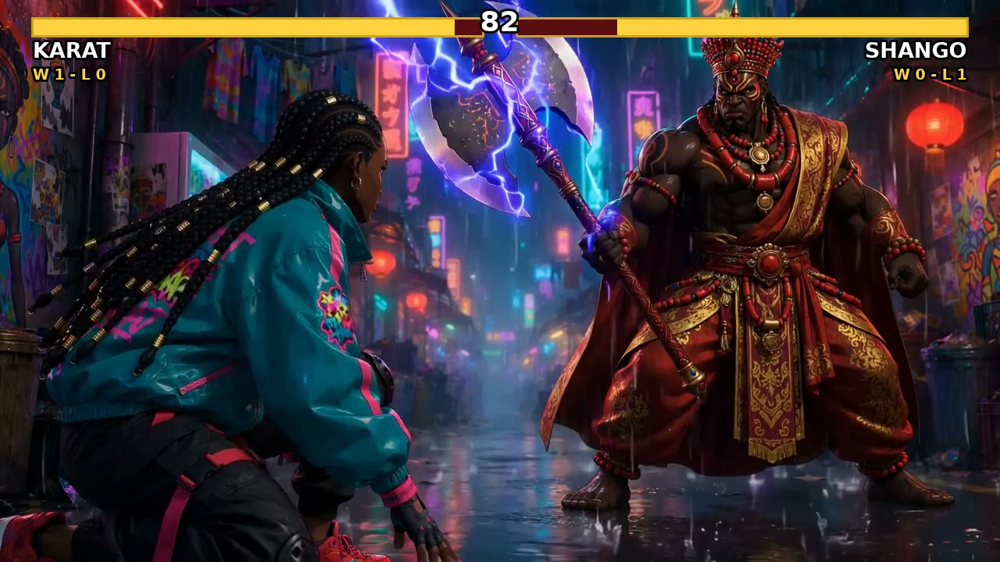
Two fighters drawn at random. One arena drawn at random. No scripts, no story armor — the wheel decides who clashes, and the ledger never lies. The climb runs on win streaks: three straight earns TREASURE BATTLE #1 against HIBANA QUE. And above it all waits THE ARTIST. He never loses.
VERSUS is continuous — the wheel never stops. New fighters enter the draw as they are designed, and every drop updates the ledger and this page. The wheel now draws from 37 locked fighters.
Two fighters are drawn at random from the locked roster of 37 fighters, in a universe arena drawn at random. No rematches until the wheel turns full. The winner is drawn too — except when THE ARTIST steps in.
Every fight is built on THE FORMULA — one locked fight command, three laws in force:
The climb runs on win streaks: three straight wins earns TREASURE BATTLE #1 — a shot at HIBANA QUE and the treasure behind him. OGUN has already banked his streak of three and waits, treasure-locked, at the door. Above the ladder stands THE ARTIST — Que himself, the apex of the universe, met only on a rare pull. He never loses. Nobody ever has.
One source of truth for every win and loss in the series. Records are read from the official ledger — never from memory.
| Fighter | Record | Standing |
|---|---|---|
| OGUN | 4–2 | Streak 3 · Treasure Battle #1 earned Treasure-locked out of regular draws until it resolves |
| SOL | 2–1 | — |
| EMBERJACK CLOWN | 2–0 | Streak 2 · One win away |
| ONYX | 2–2 | Streak 1 |
| KARAT | 1–1 | — |
| SHANGO | 1–1 | Streak 1 |
| HANGMAN HUSH | 1–2 | — |
| VOLT | 1–2 | — |
| DUECE | 0–1 | — |
| BALOGUN | 1–0 | Series debut · Drop 13 · Streak 1 |
| MASKED RIVAL NINJA | 1–0 | Series debut · Drop 16 · Streak 1 |
| TSUMUJI | 1–0 | Series debut · Drop 17 · Streak 1 |
| OYA | 1–0 | Series debut · Drop 18 · Streak 1 |
| KYRO | 1–0 | Series debut · Drop 19 · Streak 1 |
| OSHUN | 0–2 | Series debut · Drop 13 |
| TANK | 0–2 | Series debut · Drop 12 |
| RED | 0–1 | Series debut · Drop 15 |
| CHROME | 0–1 | Series debut · Drop 16 |
| WISP | 0–1 | Series debut · Drop 18 |
The first fighter through the front door. The god of iron stacked three straight — SOL, TANK, then RED — and banked the streak at Drop 15. He takes no regular draws now: he waits, treasure-locked, for TREASURE BATTLE #1 against HIBANA QUE.
Undefeated — and never touched. Two straight wins by exhaustion and terror, one more and the clown knocks on the treasure door.
The brawler is climbing again — the Drop 12 win over TANK started a fresh streak after the rooftop wars left him 2–2.
Five first-timers, five first wins: BALOGUN, MASKED RIVAL NINJA, TSUMUJI, OYA and KYRO all debuted 1–0 across Drops 13–19. Every streak starts somewhere.
Every finished fight in the series so far. Watch them on the main channel — Que’s Creations (@AfroAnimeQC) on YouTube, @xtc_que on Instagram, @xquetheplug on TikTok.
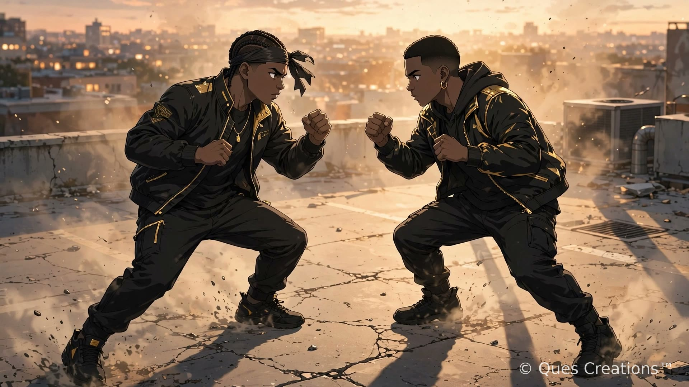
The series opener on a Kain City rooftop — the perfect run starts here.
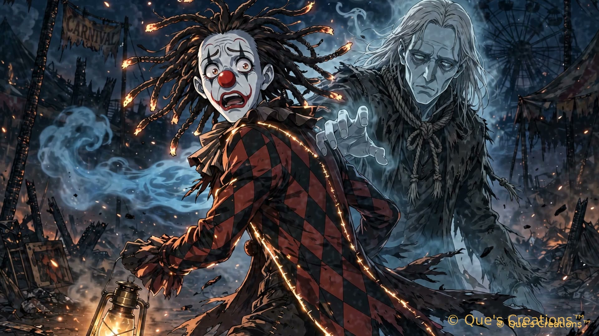
Fire against mist — the clown’s first step toward the boss door.
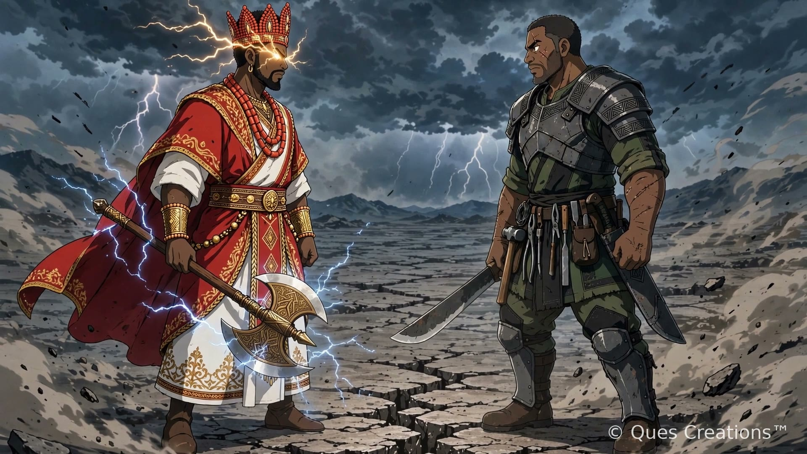
Thunder against iron on a cracked battlefield under a storm sky. The iron did not bend.
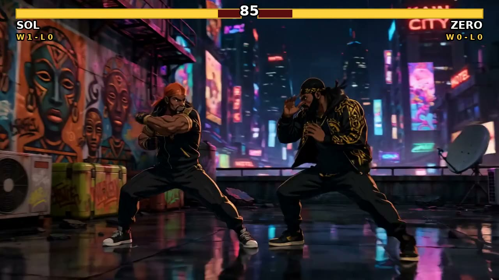
DUECE stepped up from GRIND’s Kain City — and ran into the slickest boxer in the draw. (Fought as ZERO — renamed DUECE 2026-10-14.)
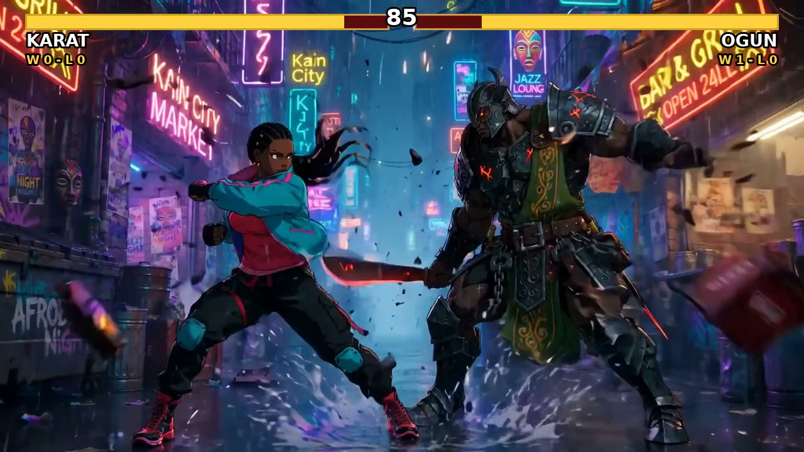
The upset. Rain, neon, and a flash striker too fast for the god of iron.
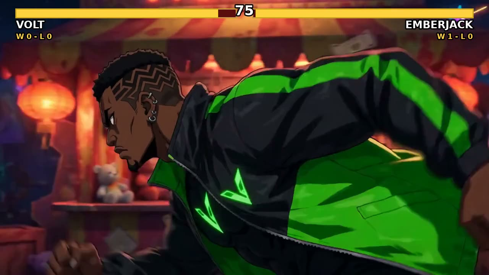
Won by exhaustion and terror: VOLT swung at lantern light all night, hit nothing, and dropped spent. The clown was never touched.
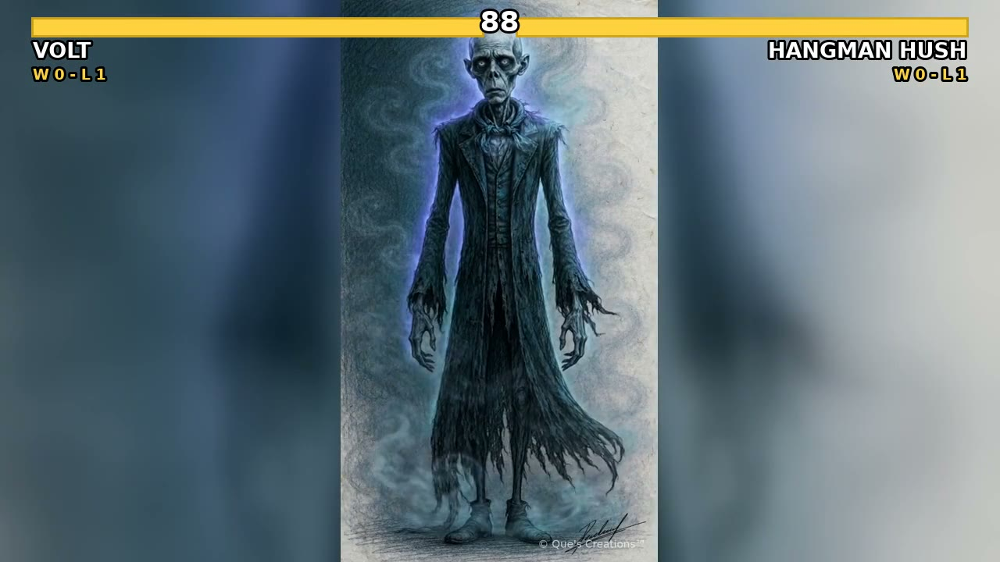
Winless vs winless on the asphalt court at dusk — VOLT’s speed finally read the mist’s rhythm.
Watch on YouTube →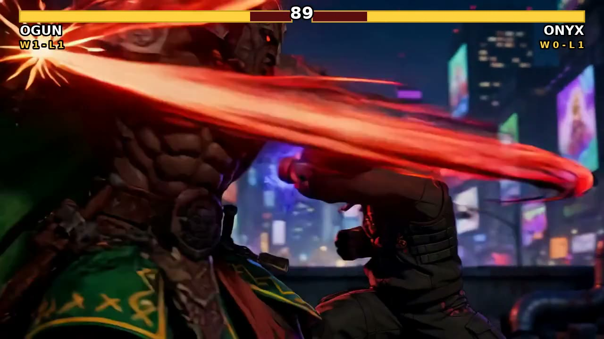
The upset on a rooftop at night — ONYX’s relentless final rush drove the god of iron down and dodged 0–2.
Watch on YouTube →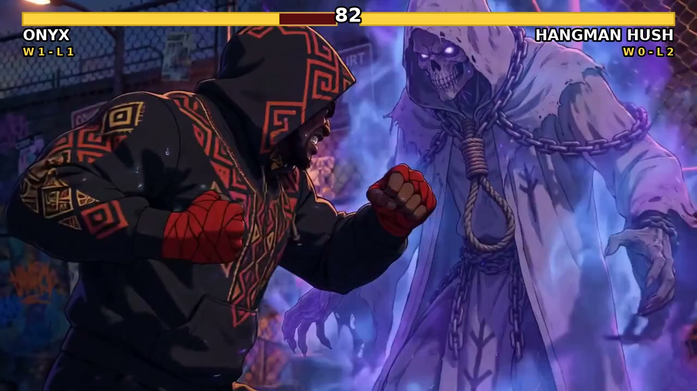
HUSH’s first win — earned without throwing a single strike. ONYX pressed into dissolving mist until he sat down empty.
Watch on YouTube →The storm answers: KARAT’s speed ran the first half, then lightning found the axe in a neon rainy alley. SHANGO’s first win.
Watch on YouTube →
The perfect run ends on the asphalt court at dusk — the Iron Advance backed SOL to the fence and emptied the bar. SOL’s first loss; a three-way tie at the boss door. 29 seconds. Live on TikTok; the YouTube leg is still open.
Watch on TikTok →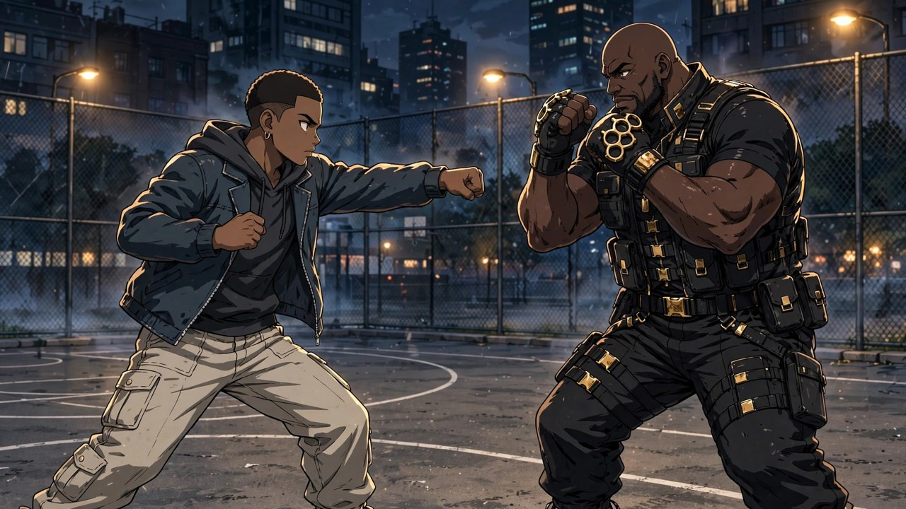
“The Wall and the Floor” — TANK’s debut on the asphalt court at dusk. The wall walked through two rounds; ONYX chopped the lead leg, and in round 3 the finisher overshot into TANK’s own court crater. Live on all three platforms.
Watch on YouTube →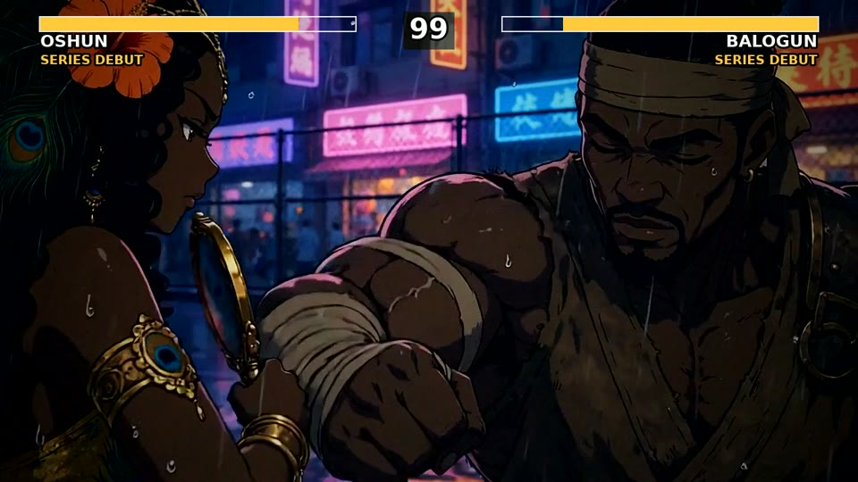
“The River and the Landing” — a double debut on the asphalt court. Where OSHUN stands the court runs with her gold river; BALOGUN stopped striking at her and struck at the world, landing dry ring after dry ring until the river lifted off the court in one sheet. No fall, no fold — a goddess, displaced. Rebuilt as the approved 1080p brawl.
Watch on YouTube → Watch on Instagram →
“The Wall Meets the Anvil” — a neon-lit rainy alley. TANK ran it for two and a half rounds, then OGUN’s Iron Palm landed and the Wall sat down. Streak two for the god of iron.
Watch on YouTube → Watch on Instagram → Watch on TikTok →
“The Anvil and the Warlord” — RED’s debut on a rooftop at night. The warlord did not debut quietly and took the roof at the turn, but the Iron Palm closed the book in round 3. Three straight: OGUN earns TREASURE BATTLE #1. Instagram leg follows today.
Watch on YouTube → Watch on TikTok →
“The Problem He Can’t Solve” — a double debut on a rooftop at night. The Ninja took the early phase and never gave the turn back; the finish was displacement, CHROME driven out of frame in a burst of dust — and his visor cracked on his first sight after. Posting soon.

“The River and the Still Wind” — TSUMUJI’s debut in a neon-lit rainy alley. OSHUN ran most of the fight and had the Still Wind down to his last fifth — then over-committed, and her own momentum answered her out of the alley. Posting soon.

“The Storm and the Starlight” — a double debut on a cracked battlefield under a storm sky. WISP was untouchable at range until OYA stopped chasing addresses and learned to strike the gather; the finish was her banked signature, THE LIGHTNING VERDICT. Posting soon.

“The Line and the Angle” — KYRO’s debut on the asphalt court at dusk. He took the early phase and never gave the turn back; the finish was displacement, VOLT driven through the gate. Posting soon.
The wheel now draws from 37 fighters. Two new names entered the pool in October — one claimed by Que’s own hand, one that IS Que.
Atlanta. A Black boxer with shoulder-length locs, plain white robe with gold banding worn open over a bare chest, a plain gold championship belt, big black gloves. He fights like Floyd — shoulder-roll defense, pull counters, precision — and hits like Rampage. Where the two meet is his signature: THE GOLDEN CROSS. “Power. Precision. Purpose.” First of the nine claimed by Que’s own hand.
Que’s Super Saiyan form — the man himself, THE ARTIST and JAY, in his battle-power state: his own locs lifted tall and blazing gold with lightning running through them, big gold pauldrons, a “Q” belt buckle, and the Pencil still in his left fist. A form of Que, never a separate person — he stands in the pool under full QUE RULE protection: a non-Que is never drawn winner over a Que.
Thirty-seven locked fighters now turn in the draw — Tier 1 veterans, the Tier 2 universe, the new-blood wave, and the Que Division standing under its own law. New fighters enter as they are designed. The wheel never stops.
KYRO’s debut — and the turn never came back. Built and passed; posting soon.